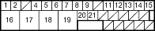

- Check the resistance between the appropriate wheel sensor (+) and (-) circuit terminals (see table).
| DTC | Appropriate Terminal | |
| (+) Side | (-) Side | |
| 11 (Right-front) | No. 5: FRS (+) | No. 4: FRS (+) |
| 13 (Left-front) | No. 7: FLS (+) | No. 6: FLS (+) |
| 15 (Right-rear) | No. 2: RRS (+) | No. 1: RRS (+) |
| 17 (Left-rear) | No. 9: RLS (+) | No. 8: RLS (+) |
ABS CONTROL UNIT 31P CONNECTOR

Wire side of female terminals
Is the resistance between 450 - 2,000 ohms?
YES - Check for loose ABS control unit 31P connector. If necessary, substitute a known-good ABS modulator-control unit and recheck. 
NO - Go to step 8.
- Disconnect the harness 2P connector from the appropriate wheel sensor and check the resistance between the (+) and (-) terminals of the wheel sensor.
Is the resistance between 450 - 2,000 ohms?
YES - Repair open in the (+) or (-) circuit wire, or short between the (+) circuit wire and the (-) circuit wire between the ABS modulator-control unit and the wheel sensor.
NO - Replace the wheel sensor.
NOTE: If the ABS indicator comes on for the reasons described below, the indicator goes off when you test-drive the vehicle at 31 mph (50 km/h).
- Only the drive wheel rotated
- The vehicle spun
- Electrical noise
- Visually check for appropriate wheel sensor and pulsar installation and condition (see table).
DTC Appropriate Wheel Sensor 12 Right-front 14 Left-front 16 Right-rear 18 Left-rear
Are they installed correctly and not damaged?
YES - Go to step 2.
NO - Reinstall or replace the appropriate wheel sensor or pulsar.
- Disconnect the ABS control unit 31P connector.